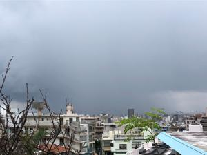
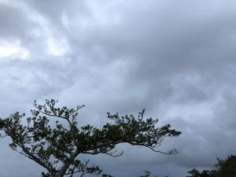

うるがいの話 ある日
最新: LINEでトークした【うるがいの話 ある日】とは 一日だけのプログです
『うるがいの話』の最新一日だけのプログで、通信料が少なく経済的だ。カニの画像をクリックすると全ての日付が載る『うるがいの話』サイトを表示します
|
|
【うるがいの話】 うるがい(ｳﾙｶﾞｲ urugai)とは、『もずくがに』の名前でとても大きくなります。 |
|---|---|
|
|
【カミマヤーの話】 猫のことを方言でマヤーといいます。カミマヤー（kamimayaa）とは、神の猫のことです。 |
|
【たながぁの音楽】 たながぁ（ﾀﾅｶﾞｰ tanagaa）とは手長えびのことで、何種類かあり大きいのは車 エビぐらいになります。 |

|
【ぶながぁの話】 ぶながぁ(ﾌﾞﾅｶﾞｰ bunagaa)とは、赤い髪の毛、赤い身体、そして身長は１ｍ２０ｃｍ ぐらい、川の蟹を食べているの目撃された。場所は沖縄県国頭郡大宜味村のと ある村僕の隣近所に住んでいる爺さんから、聞いた話です。 |
|
|
【ギーマの話】 ギーマ(giima)とは、山原の里山に咲くスズランに似た、 花を付けます。実は食べられます、 気が付くと口の周りが紫になっています。 |
2022年09月11日 (日）LINEでトークした
16:20
 
台風１２号は当初の予報コースが、ずれにずれて・・、マ、来ない方がいい。
風は無くても、雨は朝から降る。雨の中、県立図書館へ行き、帰りに古雑誌等
をサンエーのえこすぽっと（古紙回収）による。１１キロで１１円だった。
家に戻るなり、ＬＩＮＥを使ってみる（大変だった）。午後に子供を友達に追
加し、パソコンにインストールしたＬＩＮＥで、子供とトークしてみた。スマ
ホだと打ち込みが、大変なのでキーボードでトークを会話すると楽なのである
。子供に友達に追加する操作をした？と尋ねるとイヤ特にと返事、オヤ、ＬＩ
ＮＥの友達かも？のメッセージでは、友達に追加しましたと書かれてあった。
あー、分からない。とりあえず、従弟や姪っ子はブロックを解除し、友達に追
加、トークをしてくれた高校の友達も友達に追加、前の職場の人も友達に追加
する。来週以降、彼らとトークを挨拶代わりに実施していくことにした。メッ
セージ通り、友達に追加したのにブロックされたと分かったら少し辛いかなと
思った。され、なぜＬＩＮＥを使うのか、ＳＭＳの送信料は１回あたり３円（
税込３．３円）がもったいない。１１円と比べると、なるほどかも。ＬＩＮＥ
を利用したのか、急にスマホの充電の減りが早くなった（２倍）。
１６時１２分 ビットコインの総資産 ￥８、８６１↓